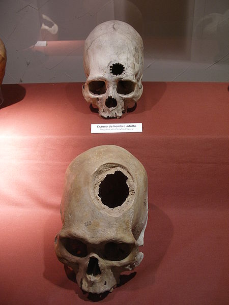

Introdução
A medicina, no sentido da formação de sua palavra, refere-se basicamente à arte de curar, e sempre foi desenvolvida por agentes que se propunham a sanar os males dos outros.
Temos, assim, formas primitivas como, por exemplo, a do pajé, que como curandeiro da tribo indígena receita e realiza procedimentos que ultrapassam o corpo físico da pessoa. Alguns rituais são datados de aproximadamente 10 000 anos atrás, onde já se realizavam operações para retirar das pessoas o que lhes causavam mal, essas intervenções se chamavam trepanação e provocavam pequenos buracos nos crânios dos indivíduos para a saída dos espíritos que possivelmente seriam a causa de suas doenças.
A medicina se constituiu em ciência na Grécia, com os primeiros relatos e experimentos de Hipócrates, há mais de 2 500 anos. Naquela época acreditava-se que os males do corpo eram consequência de um desequilíbrio dos líquidos presentes no organismo. Com o crescimento de Roma, muitos médicos do mundo todo se mudaram para lá a fim de desenvolver seus estudos. Porém um merece destaque, o grego Galeno que, através da dissecação de animais, construiu um modelo anatômico que foi empregado a partir de então para se estudar por comparação o organismo humano.
No Egito, o exercício da medicina se aperfeiçoou com uma estreita ligação com a religião, afinal, os médicos atendiam aos Faraós, que eram considerados a encarnação de deuses. Dessa forma, os egípcios desenvolveram várias técnicas de tratamento de enfermidades e até emplastros feitos com vísceras de leões ou elefantes. Graças às técnicas e trabalhos desenvolvidos por esses práticos e estudiosos, temos a preservação dos corpos mumificados dos antigos faraós egípcios.
Durante a Idade Média o grande desafio era vencer as imposições e as proibições da religião que, ao propor que o corpo humano era sagrado, impedia que houvesse dessecações e o próprio estudo das partes internas do organismo. Somente no século XV (1401-1500) houve a autorização para realizar as primeiras dissecações, os corpos escolhidos eram de criminosos condenados à morte. Mas não era o bastante, alguns médicos realizavam aventuras como aguardar a execução de uma pessoa para logo em seguida roubar seus corpos. Conta a história que Versalius, um médico belga, roubou um esqueleto esquecido numa forca.
A medicina, com o fim das imposições, se desenvolveu e, aliada à descoberta de outras ciências como a biologia, a física, a química, além da própria sociedade em si, temos a ciência que conhecemos atualmente.